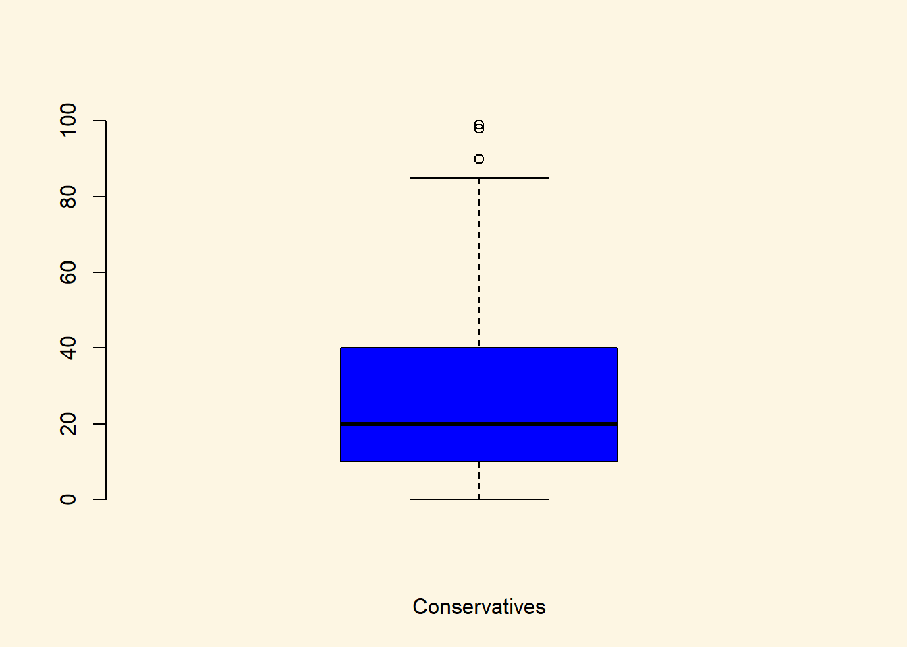

Chapter 6 Correlations and differences in means
6.1 Seminar
In this session, we will cover bivariate relationships, that is relationships between two variables. For relationships between two continuous variables, we will look at correlations and plots and for relationships between a continuous dependent variable and a binary independent variable, we will look at differences in means.
6.1.1 Bivariate relationships
In data analysis we are mostly interested in understanding the relationships between two (or more) variables. For instance, between a predictor (independent variable) and an outcome of interest (dependent variable). Summary statistics are often the first steps in trying to understand relationships between variables.
Initially we might want to visualise a relationship between an independent variable and a dependent variable (outcome). For example, we might want to see how two categories are related to an outcome of interest.
Again, as good practice, let’s first clear our workspace before we start:
rm( list = ls() )Let’s open the data again:
dat1 <- read.csv("non_western_immigrants.csv", stringsAsFactors = FALSE)
dim (dat1)[1] 1049 13Here we will compare if there are differences in perceptions of non-Western immigrants between those that identify with the Convervatives and those that support the Labour party.
We need to first create two new dummy variables from the categorical variable that lists identified political parties. These two binary variables will tell us observations where someone identifies with the Conservatives (1=yes and 0 = no) and the same for the Labour party (1=yes and 0=no). Here we have to use the ifelse function:
dat1$conservatives <- ifelse(dat1$party_self == 1, yes = 1, no = 0)
dat1$labour <- ifelse(dat1$party_self == 2, yes = 1, no = 0)So we create new variables within our dataframe using categories from the party_self variable. == 1 is the category we are choosing. If the ifelse statement is true, they do identify with that party, we code yes as a 1 and no as a 0.
We can now run plots for the Conservatives and Labour party. We need to select the arguments as before, including appropriate colours for the parties. Here we also set the ylim to show a scale of the data from 0-100. First for the Conservative party and then for the Labour party:
# separte plot window into 1 row and 2 columns
par(mfrow=c(1,2))
boxplot(
dat1$IMMBRIT[dat1$conservatives==1],
frame.plot = FALSE,
xlab = "Conservatives",
ylim = c(0, 100),
col = "blue"
)
boxplot(
dat1$IMMBRIT[dat1$labour==1],
frame.plot = FALSE,
xlab = "Labour",
ylim = c(0, 100),
col = "red"
)
Note: If you want to reset the plot window to one row and 1 column you need to run par(mfrow=c(1,1).
Overall, there appears to be very little difference between the Conservatives and Labour distributions in regards to perceptions of non-Western immigrants. The dots at the top of the scale represent outlier cases, where perceptions overestimate the number of immigrants.
The higher values for the Labour party could be due to high Labour support in diverse urban centres such as London. Yet, these are just samples and a snapshot of the possible relationship.Samples are never the same and vary. For instance, crime is not statistic and will vary over time and space.
Can we be sure that this result did not simply occur by chance?
This brings us to the importance of hypothesis testing.
6.1.2 Hypothesis testing
Because relationships can occur by chance, hypotheis testing is central to statistics. The first step is to form our own hypothesis about a potential relationship between variables and then compare this against what is known as the null hypothesis. The null hypothesis represents the notion that nothing special has occured and that the relationship we are observing has only occured by chance, i.e. getting heads when flipping a coin.
In the lecture slides, we cover this by exploring the Lady Tea Tasting Test (Fisher, 1925). When running statistics in R and other statistical packages, most models report a t-statistic and p-value, which we then informs us of whether we should reject the null hypothesis.
The t-statistic is easy to interpret. While we know 1 standard deviation from the mean represents 68% of the distribution, more than 1.96 deviations is more than 95% of the distribution. Therefore, if the t-statistic is higher than an absolute value of 1.96 (either 1.96 or -1.96), then the estimate we observe falls outside 95% of possible resampled estimations and is simply too rare to have occured by chance.
The p-value is based on the t-statistic and provides the actually probability that a estimate occured by chance. In most fields of research, the conventional threshold for a p-value is less than 0.05.This implies we will incorrectly reject the null hypothesis less than 5% of the time. A p-value of 0.01 implies we will incorrectly reject the null hypothesis 1% of the time. So the lower the p-value, the more confidence we can have in our estimate. If we reject the null hypothesis then the relationship we observe is statistically significant.
Let’s move on to a t-test to assess and outcome and whether two categories are statistically significant from one another. Here we explore difference between two estimated means.
6.1.3 T-test (difference in means)
We are interested in whether there is a difference in income between countries that have an history of colonialisation and those that do not. Put more formally, we are interested in the difference between two conditional means. Recall that a conditional mean is the mean in a subpopulation, such as the mean of income given that the country was a victim of colonialisation (conditional mean 1).
The t-test is the appropriate test-statistic. Our interval-level dependent variable is wdi_gdpc which is GDP per capita taken from the World Development Indicators of the World Bank. Our binary independent variable is h_j.
Let’s check the summary statistics of our dependent variable GDP per captia using the summary(). It returns several descriptive statistics as well as the number of NA observations (missing values). Missing values mean that we have no information on the correct value of the variable for an observation. Missing values may be missing for many different reasons. We need to be aware of missings because we cannot calculate with missings.
Lets bring the data in:]
dat2 <- read.csv("QoG2012.csv", stringsAsFactors = FALSE)summary(dat2$wdi_gdpc) Min. 1st Qu. Median Mean 3rd Qu. Max. NA's
226.2 1768.0 5326.1 10184.1 12976.5 63686.7 16 We use the which() function to identify the row-numbers of the countries in our dataset that have a colonial history. The code below returns the row index numbers of countries with a history of colonialisation.
which(dat2$former_col == 1) [1] 3 5 6 8 11 12 13 15 17 18 20 21 22 23 24 26 27
[18] 29 30 32 33 34 35 36 39 40 41 42 43 45 46 48 50 51
[35] 52 53 54 56 58 61 62 64 66 67 69 70 71 72 73 74 77
[52] 78 80 84 85 88 89 92 94 95 96 99 103 104 105 106 107 109
[69] 110 111 116 117 118 119 120 123 125 126 127 129 130 131 132 133 134
[86] 135 136 137 140 142 145 146 147 148 150 152 154 155 156 158 160 161
[103] 162 164 165 166 169 172 173 174 175 176 179 180 183 185 187 188 190
[120] 191 192 194Now, we can explore conditional means. Below we access the variable that we want (wdi_gdpc) with the dollar sign and the rows in square brackets. The code below returns the per capita wealth of the countries with a colonial history:
mean( dat2$wdi_gdpc[dat2$former_col == 1], na.rm = TRUE)[1] 6599.714Now, go ahead and find the mean per capita wealth of countries without a colonial history:
mean( dat2$wdi_gdpc[dat2$former_col == 0], na.rm = TRUE)[1] 16415.39There is a clear numeric difference. Countries with a colonial history do appear to be significantly poorer.
However, we know that samples are subject to sampling variability. We therefore need to quantify the uncertainty that results from variable samples. To assess whether we can be reasonably sure that the difference between the estimates of wealth is not due to a strange sample or by chance, we carry out the t test to assess if there is a statistically significant difference between these populations:
t.test(dat2$wdi_gdpc[dat2$former_col == 1], dat2$wdi_gdpc[dat2$former_col == 0],
mu = 0, alt = "two.sided", conf = 0.95)
Welch Two Sample t-test
data: dat2$wdi_gdpc[dat2$former_col == 1] and dat2$wdi_gdpc[dat2$former_col == 0]
t = -5.0603, df = 101.69, p-value = 1.866e-06
alternative hypothesis: true difference in means is not equal to 0
95 percent confidence interval:
-13663.313 -5968.043
sample estimates:
mean of x mean of y
6599.714 16415.392 Let’s interpret the results we get from t.test(). In our example the question is: Do countries with a former colonial history have different mean income levels than countries without colonial history?
The dependent variable is income, while the indepedent variable is where a country has a colonial history.
We know that when the t-statistic is greater then 1.96 or than -1.96, then we can safely reject the null hypothesis, i.e. it is less than 5% likely the estimate occured by chance. The p-value gives us a more direct probability of us wrongly rejecting the null hypothesis of 1.866e-06which means a p-value of 0.000001866!!!
In the next line you see the 95% confidence interval because we specified conf=0.95. If you were to take 100 samples and in each you checked the means of the two groups, 95 times the difference in means would be within the interval you see there.
At the very bottom you see the means of the dependent variable by the two groups of the independent variable. These are the conditional means that we estimated above. By minusing the $6599.7 from $16414.4, we know that former colonial countries are on average $9814.70 worst off!
6.1.4 Relationships between continuous variables
One way to explore the relationship between two continous variables is to use correlation. This is a widely used as a summary statistic. Correlation is a measure of linear association. It can take values between -1 and +1. Where -1 is a perfect negative relationship, 0 is a no relationship and +1 is a perfect positive relationship. 0 means there is no relationship, as would be expected if the null hypothesis was true.
We estimate the correlation coefficient in the following:
cor(y = dat2$undp_hdi, x = dat2$wbgi_cce, use = "complete.obs")[1] 0.6821114| Argument | Description |
|---|---|
x |
The independent variable that you want to correlate. |
y |
The dependent variable that you want to correlate. |
use |
How R should handle missing values. use="complete.obs" will use only those rows where neither x nor y is missing. |
The interpretation of the correlation coefficient is that there is a positive relationship. However, the correlation coefficients does not tell us the magnitude of the relationship.
Another weakness is that it is a measure of linear association only. That means, there could be a curvilinear (or non-linear) realtionship which we miss (for instance a u-shaped relationship).
Often the best way to get a sense for the relationship beetween two continuous variables is visual inspection using a scatter plot. The human development index measures the quality of life and the World Bank Control of Corruption Index is a measure for the quality if institutions. We want to evaluate whether the two variables are related at all. Here, we could form the hypothesis that better insitutions improve the quality of life of citizens.
To investigate this relationship, we construct a scatterplot.
plot(
x = dat2$wbgi_cce,
y = dat2$undp_hdi,
xlim = c(-2, 3),
ylim = c(0, 1),
frame = FALSE,
xlab = "World Bank Control of Corruption Index",
ylab = "UNDP Human Development Index",
main = "Relationship b/w Quality of Institutions and Quality of Life",
pch = 16,
col = "darkgray"
)The plot will give you a good idea whether about whether these two variables are related or not. Sometimes, the correleation coefficient is reported.
Overall, summary statistics are an important step in understanding the relationship between variables and whether such relationships occur by chance. However, this does not tell us much about the magnitude of the relationships we seek to explore. For this we must switch our attention to linear regression, which provides coefficients that can be interpreted as the extent to which a independent variable impacts a dependent variable. Linear regression also allows us to control for other independent variables which may also explain our dependent variable, i.e. alternative explainations of the outcome we are exploring.